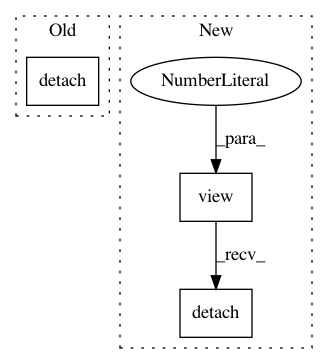

447444fd06594e531ae1141afac78051481e4468,catalyst/rl/offpolicy/algorithms/td3.py,TD3,_base_loss,#TD3#Any#Any#Any#Any#Any#,107
Before Change
policy_loss = -torch.mean(q_values_tp0_min)
// critic loss
actions_tp1 = self.target_actor(states_tp1).detach()
actions_tp1 = self._add_noise_to_actions(actions_tp1)
q_values_t = [
x(states_t, actions_t).squeeze_(dim=3)
for x in self.critics
After Change
// [bs; num_heads; 1] -> many-heads view transform
// [{bs * num_heads}; 1]
q_target_t = (
rewards_t + (1 - done_t) * gammas * q_values_tp1
).view(-1, 1).detach()
value_loss = [
self.critic_criterion(x, q_target_t).mean() for x in q_values_t
]
In pattern: SUPERPATTERN
Frequency: 4
Non-data size: 3
Instances
Project Name: catalyst-team/catalyst
Commit Name: 447444fd06594e531ae1141afac78051481e4468
Time: 2019-10-31
Author: scitator@gmail.com
File Name: catalyst/rl/offpolicy/algorithms/td3.py
Class Name: TD3
Method Name: _base_loss
Project Name: catalyst-team/catalyst
Commit Name: 447444fd06594e531ae1141afac78051481e4468
Time: 2019-10-31
Author: scitator@gmail.com
File Name: catalyst/rl/offpolicy/algorithms/sac.py
Class Name: SAC
Method Name: _base_loss
Project Name: catalyst-team/catalyst
Commit Name: 447444fd06594e531ae1141afac78051481e4468
Time: 2019-10-31
Author: scitator@gmail.com
File Name: catalyst/rl/offpolicy/algorithms/dqn.py
Class Name: DQN
Method Name: _base_loss
Project Name: catalyst-team/catalyst
Commit Name: 447444fd06594e531ae1141afac78051481e4468
Time: 2019-10-31
Author: scitator@gmail.com
File Name: catalyst/rl/offpolicy/algorithms/ddpg.py
Class Name: DDPG
Method Name: _base_loss